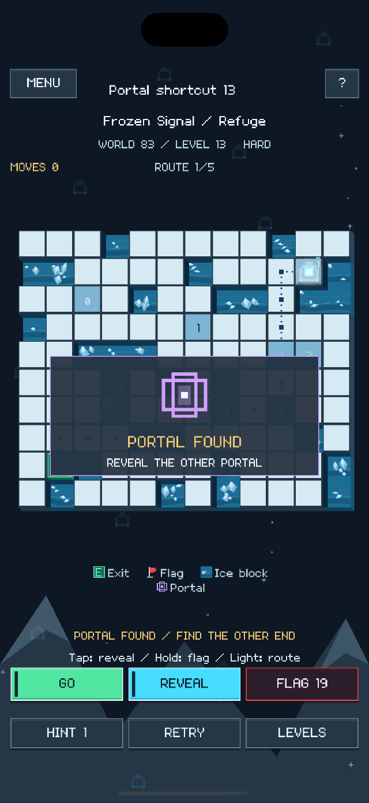
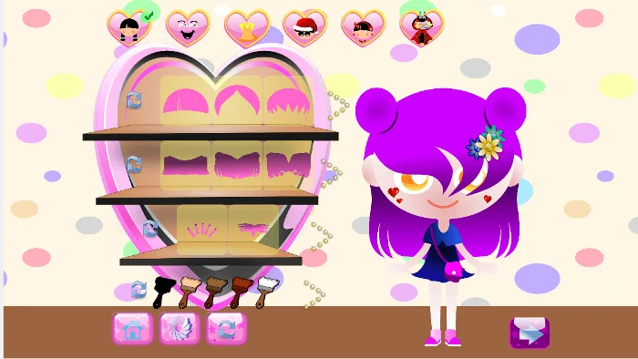

5 приключений point-and-click
TinyStory
Герои-животные, яркие острова и необычные тайны. Выберите свою историю среди пяти приключений TinyStory.
iOS · Android · Компьютер, в зависимости от игры
Подробнее: TinyStoryAnneMu’s Games · AML Creation
Откройте TinyStory и Celestwald: две серии приключений point-and-click с яркими мирами, запоминающимися героями и любопытными загадками.
Посмотреть все игры ↓5 приключений point-and-click
Герои-животные, яркие острова и необычные тайны. Выберите свою историю среди пяти приключений TinyStory.
iOS · Android · Компьютер, в зависимости от игры
Подробнее: TinyStory
2 приключения в волшебном мире
Станьте учеником алхимика, откройте Древо снов и продолжите путешествие с его волшебными семенами. Познакомьтесь с Celestwald 1 и 2.
iOS · Android · Steam и itch.io для первой игры
Подробнее: Celestwald 1 & 2✦ Уже на Android
Сапёр, где каждая безопасная клетка открывает путь.
Читайте подсказки, отмечайте мины и ведите маленький огонёк через миры загадок. 60 уровней бесплатно на Android.
iPhone и iPad, скоро



Ещё больше миров для открытий
Создайте своего Mochi или откройте головоломки с плитками в Mahjong Castle.

Милые и творческие игры
Создайте виртуального питомца Mochi, наряжайте маленьких плюшевых друзей и украшайте их комнаты. Собирайте наклейки и играйте в мини-игры. Ежедневная активность Golden Cloud позволяет получать бесплатные Bunny Tokens для вашего уютного плюшевого мира.
iOS · Android
Подробнее: Mochi Plush Kawaii
Головоломки и логика
Соединяйте свободные плитки и исследуйте волшебный замок: 240 уровней в 14 локациях. Бесплатно доступны 30 уровней сада и четыре уровня льда. Завершите уровень 30 в саду, чтобы открыть безлимитный Classic. Игра для Android, с дополнительным Adventure Pack за разовую покупку.
Android
Подробнее: Mahjong CastleКоллекция

Приключения point-and-click
Шесть котят, шесть маленьких приключений. Исследуйте мир каждого котёнка, собирайте предметы и решайте забавные загадки point-and-click. Разные истории и яркие сцены ждут вас в Cats in the Box Adventure для iOS и Android.
iOS · Android
Подробнее: Cats in the Box Adventure
Приключения point-and-click
Помогите маленькому розовому герою найти осколки разбитого кристалла. Исследуйте 30 уровней в мирах Green, Fire и Candy, собирайте предметы и решайте загадки. Остерегайтесь ловушек на пути. Fantasiant сочетает приключения и головоломки на мобильных устройствах и itch.io.
iOS · Android · Windows · macOS · Linux
Подробнее: Fantasiant · Tiny Hero
Милые и творческие игры
Наряжайте Лили и её плюшевого медвежонка, а затем украшайте спальню мебелью, цветами и игрушками. Проявляйте творчество и возвращайтесь в сохранённую комнату. Lili’s Bedroom — игра для оформления комнаты на iOS, работает офлайн и без рекламы.
iOS
Подробнее: Lili’s Bedroom
Уже на Android
Сапёр, где каждая безопасная клетка открывает путь. Читайте подсказки, отмечайте мины и ведите маленький огонёк через миры загадок. 60 уровней бесплатно на Android.
Android · Google Play
Открыть Lumen Mine Играть в Google Play Смотреть короткое видео
Головоломки и логика
Собирайте яркие картинки в 22 пазлах и 132 головоломках с квадратными фрагментами. Выбирайте подходящую сложность и возвращайтесь к сохранённому прогрессу. Puzzles Mix предлагает два вида головоломок с изображениями на iOS.
iOS
Подробнее: Puzzles Mix
Головоломки и логика
Читайте числовые подсказки, отмечайте скрытые мины и тщательно выбирайте каждый ход. Исследуйте 120 уровней в двух мирах. Особые мины и ограниченное число ходов добавляют новые задачи. Little Minesweeper Guy предлагает красочные головоломки в стиле «Сапёра» на iOS.
iOS
Подробнее: Little Minesweeper Guy
Ритм и отдых
Нажимайте, когда движущийся круг достигает светящейся дуги, собирайте комбо и открывайте иллюстрированные фоны. Выберите спокойный режим Zen или более быстрый Fast. Исследуйте 10 миров, пять из них бесплатны. Дополнительный Premium доступен за разовую покупку. Ритм-игра для iPhone и iPad.
iOS
Подробнее: Zen Circle SpiritMochi Plush Kawaii · 2026
Создайте Mochi, наряжайте маленьких плюшевых друзей, украшайте комнаты и собирайте наклейки. Ежедневная игра Golden Cloud приносит бесплатные Bunny Tokens.
Подробнее Mochi
AML Creation · Звуки и спокойные минуты
Смешивайте дождь, волны, камин и фоновые шумы, создавая собственную звуковую атмосферу. Настраивайте каждый звук, включайте таймер и слушайте офлайн без рекламы. Somnifox — звуковое приложение для iPhone и iPad с бесплатными функциями и дополнительным Premium.
Подробнее Somnifox ↗